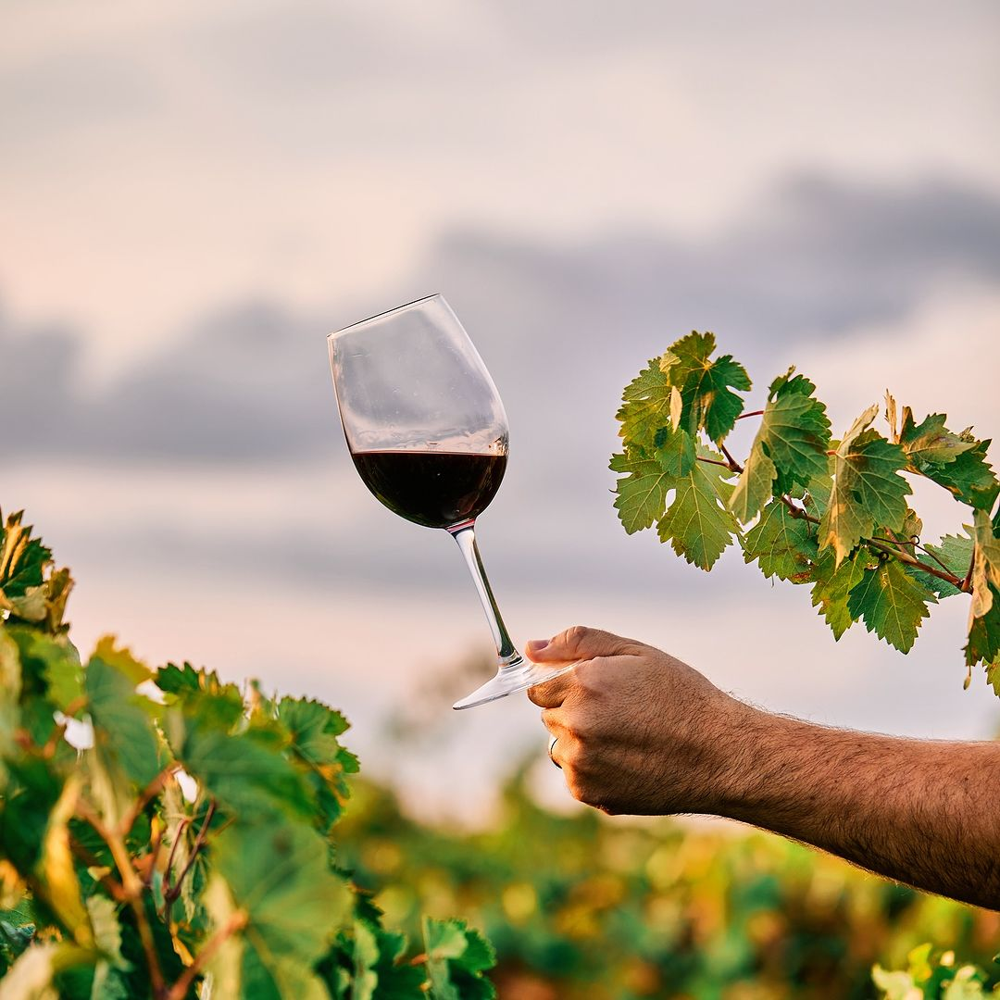
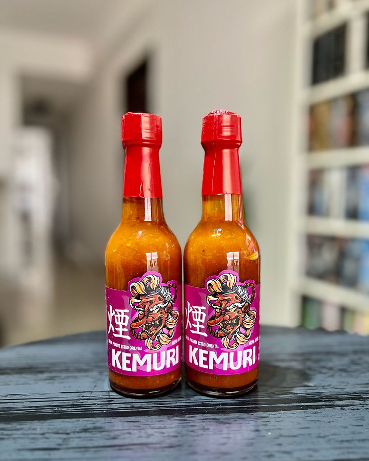
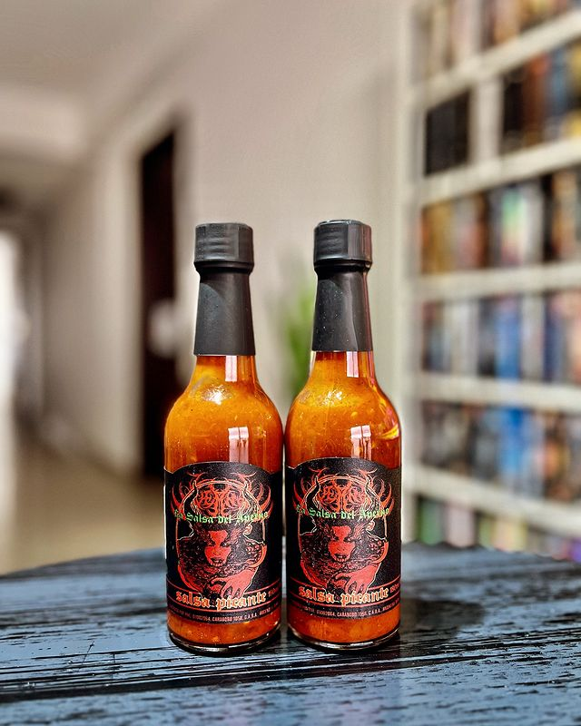

Este Pinot Noir reserva revela su carácter distintivo con un color rojo rubí translúcido. En la nariz, seduce con aromas cautivadores de frutas rojas frescas, como frutillas y cerezas, junto con delicadas notas florales de violetas. En boca, la elegancia se despliega con taninos suaves y una acidez equilibrada. Los sabores de bayas rojas se entrelazan con toques sutiles de especias, mientras que el final es largo y refinado, dejando un regusto a frutas silvestres.
Este Malbec tinto reserva se presenta con un profundo color púrpura, anunciando su riqueza y concentración. En la nariz, despierta los sentidos con aromas intensos de moras maduras, ciruelas y un toque sutil de vainilla. En boca, su estructura imponente se equilibra con taninos maduros, creando una experiencia redonda y envolvente. Los sabores de frutas negras se complementan con notas de chocolate oscuro y un toque especiado, culminando en un final largo y satisfactorio.
Este vino rosado encarna la elegancia en un tono salmonado brillante. En nariz, despliega una armonía de frutas del bosque frescas, como fresas y frambuesas, complementadas por sutiles notas florales de rosas. En boca, sorprende con una textura sedosa y un equilibrio perfecto entre la acidez y la fruta. Los sabores jugosos de cereza y melocotón se entrelazan, ofreciendo una experiencia refrescante y sofisticada. Este vino rosado es ideal para disfrutar en cualquier ocasión.
La salsa "Fuoco" es una explosión de sabores inspirada en la cocina italiana. Con un aroma tentador a hierbas frescas, tomates maduros y ajo asado, esta salsa picante transporta tus sentidos directamente a las colinas de la Toscana. La combinación perfecta de picante y dulzura resalta el equilibrio, mientras que las notas herbales, como albahaca y orégano, aportan una dimensión mediterránea. Ideal para realzar platos de pasta, pizza o incluso como aderezo en una bruschetta.
"Kemuri" captura la esencia de la cocina japonesa en una salsa picante única. Su fragancia ahumada y umami evocan recuerdos de parrillas al aire libre en un día de verano. Los sabores de la salsa están equilibrados con una base de soja, acentuada por la intensidad del wasabi y la profundidad del dashi. Esta salsa agrega un toque intrigante y audaz a platos como sushi, sashimi o yakitori, elevando la experiencia culinaria con su sabor ahumado distintivo.
La "Salsa del Averno" se gana su nombre con su picor ardiente y su audaz carácter. Este elixir picante desata una tormenta de fuego en el paladar, con chiles habaneros, jalapeños y una selección de pimientos intensos. Sus notas ahumadas y toques de ajo aportan profundidad a la experiencia. Esta salsa es perfecta para los amantes de lo extremo, añadiendo un desafío culinario a platillos como guisos, carnes a la parrilla o cualquier creación que busque llevar los límites del picante al máximo. ¡Prepárate para un viaje al inframundo del sabor picante!